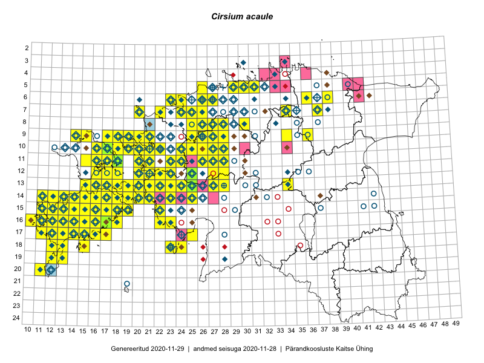

Cirsium acaule
Uuendatud: 2016-12-02
Kaardile koondatud taksonid: Cirsium acaule (L.) Scop.

Kaart põhineb 242 vaatlusel. Taksonit on leitud 118 ruudust.
Kuvatud viited 20 esimesele andmebaasikirjele, ülejäänud PlutoFis
- Toomas Kukk, Thea Kull, Timo Luhamäe, Ott Luuk, Peedu Saar: 2015-06-29: 14-17: ala
- Peedu Saar, Toomas Kukk: 2015-05-28: 11-17: ala
- Toomas Kukk, Eerik Leibak: 2015-08-09: 14-15: ala
- Peedu Saar, Toomas Kukk: 2015-05-26: 10-16: ala
- Rein Kalamees, Kersti Püssa: 2015-08-09: 05-31: ala
- Rein Kalamees: 2015-08-09: 05-31: ala
- Ott Luuk, Jaak-Albert Metsoja: 2015-05-27: 12-22: ala
- Peedu Saar, Elle Roosaluste: 2015-07-12: 13-20: ala
- Toomas Kukk, Peedu Saar: 2014-07-03: 14-21: ala
- Toomas Kukk, Eerik Leibak: 2015-08-11: 09-15: ala
- Toomas Kukk, Mari Reitalu: 2014-06-20: 17-12: ala
- Toomas Kukk: 2014-06-17: 15-19: ala
- Toomas Kukk: 2014-06-19: 17-14: ala
- Tiit Hallikma, Toomas Kukk: 2015-08-27: 12-21: ala
- Rein Kalamees, Kersti Püssa: 2015-04-29: 13-21: ala
- Peedu Saar: 2015-09-07: 16-17: ala
- Meeli Mesipuu, Kadri Tali: 2015-07-06: 16-17: ala
- Meeli Mesipuu, Kadri Tali: 2015-07-06: 16-18: ala
- Meeli Mesipuu, Kadri Tali: 2015-07-08: 13-17: ala
- Meeli Mesipuu, Kadri Tali: 2015-07-08: 14-17: ala